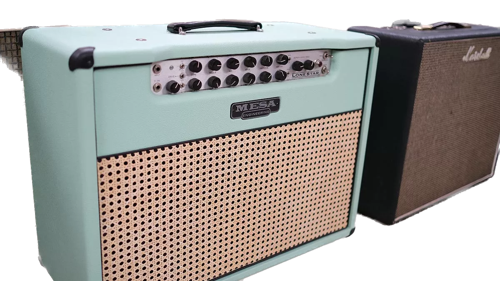
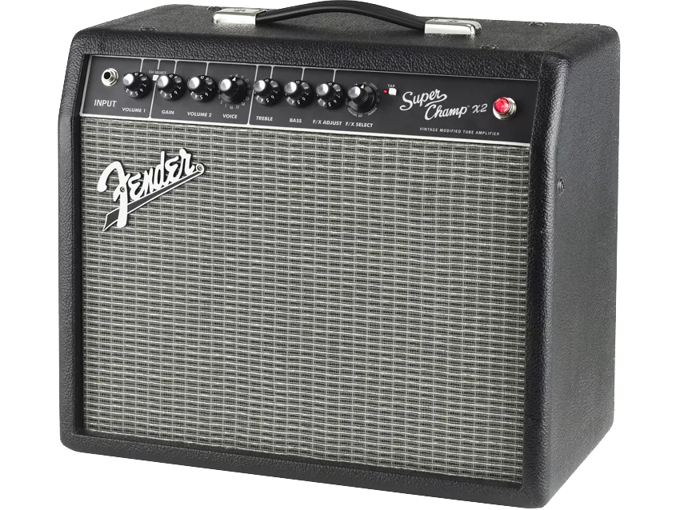
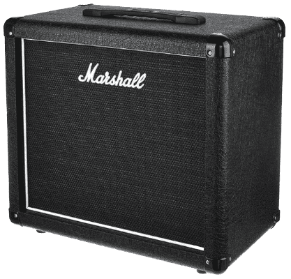
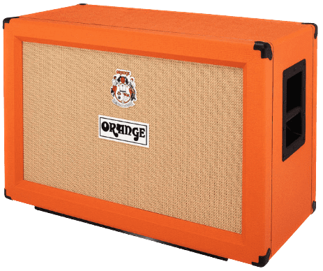
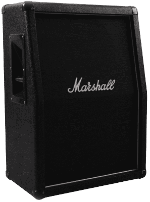
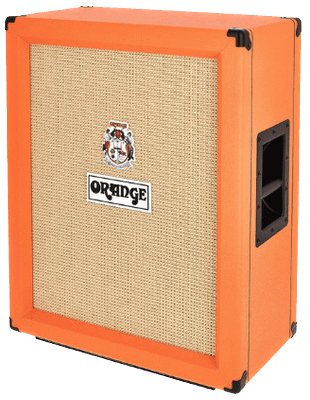
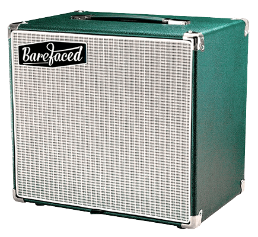

6 Best Space-Saving Speaker Cabinets For Guitarists (2023)
Written by XYZ
When most people think of speaker cabinets, they tend to think of huge 4×12” cabinets – or full stacks.
But the unfortunate truth is that while they sound great, they take up a hell of a lot of room.
Whether you’re a gigging guitarist or you play at home – you may find yourself limited on space.
So, in this post, I’ve put together a list of some of the best space-saving speaker cabinets. Covering a range of different configurations (1×12” and 2×12”), tones and price points.
How open-back and closed-back guitar cabs affect your tone
Zilla Cabs' Paul Gough explains the effect that speaker cabinet choice makes on your guitar
tone

There’s plenty of talk about how speakers affect your guitar tone – now it’s time to examine a few aspects of the guitar cabinet into which the speakers are loaded.
It might seem self-indulgent for a cabinet designer to think anyone would care about the thickness of a baffle, how it’s mounted or how an amplifier’s need to displace heat leads to limitations in backboard design.
But these are all aspects of a build that determine how an amplifier and cabinet will react when you plug into it. There are also a few useful signs that can help the initiated more easily shape or use a sound to their benefit.
Here, we’ll talk about backboard design. More simply put: open versus closed back. This straightforward aspect of a cabinet can often determine whether or not you’ll like how it sounds or, more subtly, whether it will be suitable for the task you want it to perform.
It’s ironic that when choosing a cab we first look at the front, which in most cases tells us very little about the important features of that cab. It’s the back we should look to first!
The crude difference between the two types of back is how they project sound. An open back projects soundwaves from both the front and rear of the cabinet, with the waves leaving the back usually bouncing off walls, reaching the player later and introducing slight phase differences.
This tends to result in a more ambient, subtle and less-focused sound, lending itself well to cleaner players through to lower-gain rock. I like to think of open back as having a certain element of natural reverb with more nuance.
The best space-saving speaker cabinets for guitarists
Before we dive into the list, it’s worth mentioning that you should always check the ohms rating and wattage that your amp is rated for.
To make it easier to find a speaker cab that matches up, I’ve included this information in the specs for each cab below.
-
1. Fender Super Champ SC112
Fender is a brand that needs no introduction. While they may be best known for their vintage styled guitars and combo amps, they make speaker heads and matching cabinets.
The Super Champ SC112 speaker cabinet, in particular, is designed to match their Super Champ X2 amp head, but it would be a great fit for plenty of other amp heads.
The Celestion G12P-80 speaker ensures you get a crisp sound with a well-controlled low-end. The closed back helps to improve bass response. It’s versatile and has plenty of character, without breaking the bank.
And since it’s made out of MDF, it’s very light. Perfect if you want to avoid injuring your back.
Specification:
- Configuration – 1×12” closed back
- Speaker type – Celestion G12P-80
- Ohms rating – 8 ohms
- Wattage – 80 watts
- Connections – 1x ¼” Jack socket
- Weight – 15lbs (6.8kg)
- Size – 18 x 10 x 18 inches (457.2mm x 254mm x 457.2mm)
-
2. Marshall MX112
Like Fender, Marshall is another one of those brands that even people outside of the music biz recognize.
The Marshall MX112 cab comes in the typical Marshall black tolex. Which is a perfect fit for their DSL20C or DSL20H amplifiers.
It’s sturdy and well made. From a tonal perspective, you can expect a strong mid-range with punchy highs and tight lows.
While this cabinet is on the pricier side, it’s still a great option for anyone wanting a speaker cab that doesn’t take up much room
Specification:
- Configuration – 1×12” closed back
- Speaker type – Celestion Seventy 80 speaker
- Ohms rating – 16 ohms
- Wattage – 80 watts
- Connections – 1x ¼” Jack socket
- Size – 19.68 x 18.5 x 11.41 inches (500mm x 470mm x 290mm)
- Weight – 29.7lbs (13.5kg)
-
3. Orange PPC-212 (Horizontal)
Orange have been a mainstay in the rock world and it’s easy to see why given the quality of their gear.
Founded in 1968, they’ve attracted plenty of big names. Everyone from Jimmy Page (Led Zep) and Billy Gibbons (ZZ Top) to Jim Root (Slipknot) and Brian “Head” Welch (Korn) have played their gear.
This horizontal variation of the Orange PPC-212 is a particularly great option for space saving, when you’re restricted on height.
The Celestion Vintage 30 speaker provides a tight and responsive sound, with excellent projection. And the typical orange color will get you noticed, for sure.
One feature unique to orange is their “skid runners”. This black bar, attached to the bottom of the cab, attaches your cabinet to the bottom of the stage to improve low-end response.
This 2×12” cabinet is in a horizontal configuration. While vertical cabinets are great if you’re limited on width (we’ll talk more about these in a moment), full-size head amplifiers don’t sit on them too well. Particularly if you’ve got a 100 watt head.
That isn’t an issue with the horizontal cab. Meaning you can capitalize on the height and stack a bunch of head amps on top of each other.
Specification:
- Configuration – 2×12” closed back (horizontal).
- Speaker type – Celestion Vintage 30
- Ohms rating – 16 ohms
- Wattage – 120 watts (mono)
- Connections – 2x ¼” Jack sockets
- Weight – 61.72lbs (28kg)
- Size – 21.65 x 17.72 x 11.42 Inches (530mm x 780mm x 380mm)
-
4. Marshall MX212A
The Marshall MX212A is a vertical slanted cabinet, with a similar spec to the previously mentioned MX112 (aside from the difference in impediance/ohms).
Thanks to the top half of the MX212A being slanted, you get more projection which means the sound it fills the room more. The speaker is aimed more at your ears and capable of plenty of low-end.
It’s fairly light and has the addition of side handles so it’s far easier than lugging a heavy 4×12” around.
And the best part is that it’s the most cost effective 2×12” cabinet I’ve found so far.
Specification:
- Configuration – Vertical slanted 2×12”
- Speaker type – Celestion Seventy 80
- Ohms rating – 8 ohms
- Wattage – 160 watts
- Connections – 1x ¼” Jack socket
- Weight – 43.98lbs (19.95kg)
- Size – 20 x 12.5 x 20.25 inches (508mm x 317mm x 514mm)
-
5. Orange PPC212V
Here we have the Orange PPC212V. Being a vertical 2×12″ cab, it’s perfect for saving on floor space.
But this isn’t just a vertical version of the Orange 2×12″ cab I mentioned earlier. There’s a good reason why I’ve listed this separately.
There are some significant differences. First of all, it uses Celestion Neo Creamback speakers. These are lighter and have a different frequency response (tone) to the Vintage 30’s in the PPC112.
For example, the Vintage 30 speaker has more mids and the Neo Creamback has a slightly mid-scooped sort of sound.
However, similar to the PPC112, the PPC212V is sturdily built and comes with those useful “skid runners” to attach the cab to the floor of the stage and improve low-end response.
Specification:
- Configuration – Vertical 2×12”
- Speaker type – Celestion Neo Creamback
- Ohms rating – 16 ohms
- Wattage – 120 watts
- Connections – 2x Parallel ¼” Jack sockets
- Weight – 43.98lbs (19.95kg)
- Size – 21.46 x 27.56 x 11.81 inches (545mm x 700mm x 300mm)
-
6. Barefaced Reformer 112
You may not have heard of Barefaced Audio before but they’ve earned a spot on this list because they build great speaker cabs.
This is unlike any other cabinet on this list and to some, that may be a problem. Although it may be a blessing for others.
Why? Well, Barefaced have changed everything with a special diffractor design that utilises both sides of the speaker cone. This means that you get the output level of a 2×12″ cab from a 1×12″ cab.
And it allows the sound to fill the room so you don’t have to have the speaker pointing at your ear in order to enjoy the tone.
What’s more is that these cabs are built to order by a team in the UK. You can choose different tolex, grills, speakers. I went for the stock model with the vintage 30 but they have plenty of other speakers to choose from which include the super lightweight neo speaker.
There are also 1×10″ or a 2×12″ versions available. Lead time can vary, for me it was around 3-4 weeks but shipping to USA/UK is usually next day.
The Barefaced Reformer 112 is a great speaker cab.
Specification:
- Configuration – 1×12” open back with a unique diffractor design
- Speaker type – Celestion Vintage 30 as standard (you can choose others)
- Ohms rating – 8 ohms
- Wattage – 60 watts as standard
- Connections – 2x ¼” Jack + speakon sockets
- Weight – 22lbs (10kg) or lighter if you opt for a neo speaker
- Size – 16 x 18 x 12inches (400mm x 450mm x 310mm)
Conclusion: which space-saving speaker cabinet should you choose?
If you want a speaker cab that is as light as possible, you’ve got some good options; the Fender Super Champ SC112 and Matrix Amplification Neolight NL12 are both incredibly light. The Fender is much cheaper, but the Matrix has a much bigger sound.
Alternatively, the Barefaced Reformer 112 is a bit heavier but is comparable to a 2×12″ in terms of it’s output. It’s also worth noting that since the Reformer is custom made, you can opt for a neo speaker which would make it a better all-round option.
If you are on a tight budget; the Fender Super Champ SC112 is a solid option for 1×12” cabs.
If you purely want an alternative to a 4×12”; the Victory 2×12” or Orange 2×12” vertical cabs are solid options. I have the Victory because it matches the color of my VX The Kraken head amp. Either are great options but there are tonal differences due to them having different speakers.
And if you’re on a budget, the Marshall MX212A is extremely affordable but a lot of people tend to swap out the stock speaker for something higher quality, such as a Vintage 30. Overall, it’s a good cabinet for the money.
However, since adding the Barefaced Reformer 112 to this list, it’s output level makes it a good alternative. Also consider their 2×12″ option since it should be comparable to most 4×12″ cabs in terms of output level.
If you want to make the most of vertical space (i.e. you have a full size head amp); while the vertical 2×12” cabinets are great if you’re restricted on width, they’re not ideal for full-size head amplifiers.
But horizontal 2×12” cabinets are – they allow you to make great use of vertical space by stacking full-size head amplifiers on top of them.
While there are number of these cabinets on the market, you can’t go wrong with the Orange PPC212 – it comes fully loaded with Vintage 30 speakers.
There is also an open back version of this cab (PPC212-OB) which gives a more open and natural feel – it’s also cheaper for some reason. I bit the bullet and paid the extra for the closed back version because I preferred the tighter bass response.
Overall, you can’t really go wrong with any of these cabs.
 Oracle has announced its free autonomous operating system — Oracle Autonomous Linux
Oracle has announced its free autonomous operating system — Oracle Autonomous Linux
 Realme X2 to Debut With Snapdragon 730G, VOOC 4.0 Flash Charge Tech Confirmed Too
Realme X2 to Debut With Snapdragon 730G, VOOC 4.0 Flash Charge Tech Confirmed Too
 Apple will live stream its iPhone 11 event on YouTube for the first time
Apple will live stream its iPhone 11 event on YouTube for the first time
 Huawei builds 5G modem into flagship Kirin 990 processor
Huawei builds 5G modem into flagship Kirin 990 processor